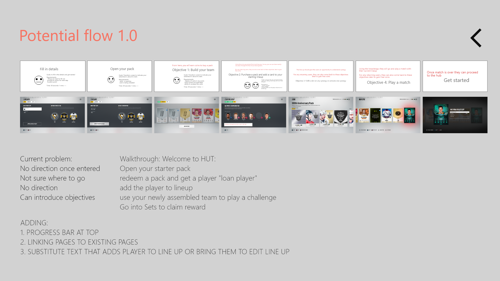

NHL19 WoC Hierarchy
During the initial production of 2018, there was conversations about developing a mode which encapsulates a few of the other modes that could potentially be branded in a community like setting similar to NBA 2K, in which the users can customize their looks, walk around, interact with other users, and decide on which sub mode they wish to play by going to the specific location. It would take place in this winter wonderland setting similar to Vancouver’s very own Whistler, a land which hockey is the way of life, a world where you can decide whether if you want to be a pro, or just play casually with your friends, a world of chel.
**To comply with my non-disclosure agreement, I have omitted confidential information. All information in this report reflects on my own work and not necessarily Electronic Arts and NHL.**
As production continues, a lot of technical constraints were flagged and on the user experience end, we played multiple games with similar concept over multiple duration in order to identify the user’s pain point not through a one time experience but through repeating the same action over multiple times. What we found was that the mode needs to be easily accessible and allow the users to be direct about what they intended to do. As we discovered, one of the most tiring some aspect of creating a world like setting, aside from the technical issues, was that a user would have to walk back and forth countless of times and by doing so would make it seem like they are spending an extended amount of time in order to accomplish something that is quite trivial.
Purpose
Upon understanding the challenge we are facing, our goal was to restructure the menu to help provide the users a more seamless experience by marginalizing the hierarchy of their needs and re-categorize the elements so that the users can access the information quickly when needed. One element which was required was to display the user’s avatar up front. There was conversations of if it’s possible to allow the users to customize their avatars without going into another sub menu. The problem with that would be the users would still be required to go to various points in order to access the different sub-hub such as Play Now, Clubs, Customize, etc. Utilizing a singular menu, we decided to restructure the hierarchy and bring forth sub menus based on feedback we’re gathered through card sorting to identify how users recognize the levels.
Through competitive analysis and research, we’ve identified some of the better games out in the market on how they organized their menus in subhubs and play modes. We identify five primary categories that a user would potentially interact with.
The five categories are listed as:
- Play: With all the current submodes within “The World of Chel” which entice the users to play more games whether it’s 1v1s or 3v3s or a full 5v5 club match up, the player decide what they would play and how they would play.
- Club:The second level as from data that was collected, any club games were able to retain the user's engagement fairly well so it was a primary goal to get the users to engage with clubs. However, in terms of information hierarchy, it doesn't make sense since any club related actions are correlated to EASHL ONLINE PLAY MODE.
- Customize: By encouraging users to customize their avatar and enticing them to keep playing and earn more items and gears, in exchange this will allow the users to be focusing on themselves compared to a simulated world setting where the focus is on the other players. However, There is still the issue in which once a user were to access into the customizing screen, the users are required to go through multiple levels to change the avatar’s appearance.
- Stats: The last level allows the users to keep track of their own progression as well as the overall performance of the club which they are in. The stats also tracks the overall statistics in which of the play mode.
In the current flow, all the information in regards to clubs would reside within the CLUB category. The problem with this flow is that any club related actions is only relevant to the EASHL online mode. Players who doesn't play in the EASHL online mode would have no incentives to go into the menu.
New Flow
As previously stated, club related action is only correlated to the online play mode under EASHL. It is pointless to surface this set of information to the users when they don't necessarily need it to deal with the general scope of the resort. To ensure the play mode menu not only serves the core players but also new players that are coming to play the game for the very first time. The updated main screen will include: PLAY, CUSTOMIZE, REWARDS, EDIT LOADOUT, and STATS with settings and inbox becoming a button call out since they should be accessible game wide and throughout the flow while the users navigates through the game.
Under the play mode select menu, with the current addition of ProAm, we would divide EASHL into two tiles. One for EASHL Drop-in and another for EASHL Online. By dividing the tiles this allows this screen to be scalable in the future for any new modes being added.
Once the users selects on the EASHL CLUB and if they haven't created a club yet, they will be prompted to create or join a club via a pop-up screen.
Iterations
Since this is the first time released version of this entirely new game mode, we have set up multiple points to collect telementries in order to help further identify future pain point users may come across. We as a team hypothesize that there would be an efficiency issue that users may come across while they are customizing their avatars as a lot of the gears are very embedded. We are currently collecting data points to make future changes. To find out more about the current iterations, feel free to reach out via email at lukpeter82@gmail.com .